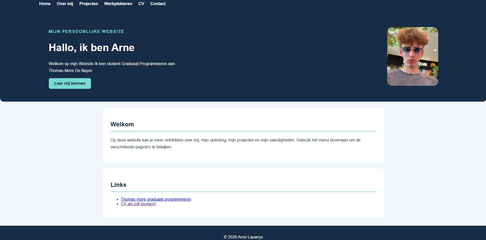

Ik ben dit project begonnen als opdracht voor school. met als inhoud een portfolio waarbij html en css wordt gebruikt
Mijn website houdt meerdere pagina's in met een navigatie balk en een structurele layout. Als hoofdkleuren heb ik vooral donkerblauw en lichtblauw gebruikt